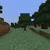

Chapitre 8
Le mur est comportemental : une vraie première réussite, puis quatre preuves qu'affiner le signal ne suffit pas — et une cinquième qui confirme le diagnostic
Prérequis : Chapitres 1 à 7 — y compris les deux premières tentatives, échouées, de trouver seul le premier arbre.

Piste débutant
Là où on en était
Le Chapitre 7 s'est terminé sur un constat frustrant : sharper le signal « suis-je perdu ? »
(en donnant au modèle plus d'exemples de situations où on est vraiment perdu) n'a rien changé au
résultat final — toujours zéro bûche coupée depuis un point de départ aléatoire. Ce chapitre
raconte la suite de l'enquête : une vraie découverte qui débloque enfin un premier résultat (pas
énorme, mais réel), suivie d'une série de tentatives supplémentaires qui échouent chacune d'une
façon différente et instructive, jusqu'à ce qu'un diagnostic clair émerge — puis d'une toute
nouvelle tentative qui teste ce diagnostic lui-même directement, avec un résultat négatif mais très
informatif : le mur n'est pas dans la perception, il est dans le comportement.
La découverte : le planificateur jetait son propre bon plan à la poubelle
En relisant, ligne par ligne, le code du planificateur (celui du Chapitre 4, qui imagine 512
histoires de 12 actions et garde la meilleure), un bug est apparu — pas un bug qui plante le
programme, un bug silencieux dans la logique elle-même. Le planificateur imagine correctement une
histoire de 12 actions, identifie correctement la meilleure... et puis n'en exécute que la toute
première action, avant de tout recommencer depuis zéro au tour suivant. Même quand le plan
imaginé était excellent — « tourne-toi vers le tronc, avance, frappe, frappe, frappe » — l'agent
n'exécutait que le premier pas de ce plan, jetait les 11 suivants, et retirait 512 histoires
complètement nouvelles au tour d'après. Un bon geste soutenu était donc systématiquement dilué en
une suite de décisions isolées et indépendantes.
La correction est minuscule : exécuter les 4 premières actions du meilleur plan trouvé, au lieu
d'une seule, avant de replanifier. Sur un lot combiné de 31 épisodes (plusieurs lancements
regroupés), cette seule correction produit 3 succès sur 31 (environ 10%) — alors que toutes
les tentatives précédentes de ce chapitre et du précédent, combinées (27 épisodes en tout),
n'avaient produit aucun succès. Ce n'est pas un chiffre énorme, et il n'est statistiquement pas
encore solide à cette taille d'échantillon — mais c'est le tout premier résultat non-nul de toute
l'histoire du projet sur ce problème précis.
La leçon est amusante et un peu déstabilisante : un bug de notation et un bug de raisonnement se
ressemblent de l'extérieur. Les chapitres précédents avaient passé beaucoup de temps à améliorer
la qualité du signal utilisé par le planificateur (l'échantillonnage collant, le réflexe de
recherche, l'affinage des données) — tout cela était réel et nécessaire, mais rien de tout ça ne
touchait au vrai défaut : le planificateur choisissait correctement, mais n'agissait ensuite que
sur un douzième de son propre choix.
Une tentative de renfort : la curiosité, à nouveau, mais « en direct » cette fois
Fort de ce petit succès, le projet a tenté d'y ajouter la curiosité (Chapitre 7), mais dans une
version différente : au lieu d'entraîner le comité de devineurs une fois pour toutes sur des
enregistrements figés (ce qui avait causé son effondrement), on l'entraîne en continu, pendant
que l'agent joue, sur ce qu'il voit réellement, instant après instant.
Premier lancement : trois épisodes sur sept ont planté à cause d'un vrai bug technique (corrigé en
cours de route). Sur les quatre épisodes valides restants, aucun succès — mais avec si peu
d'épisodes, ce n'est pas surprenant en soi (le taux de succès attendu à ce niveau, sur seulement 4
essais, serait de moins d'un demi-succès). Le vrai problème, découvert après coup : le
diagnostic qui aurait permis de savoir si le signal de curiosité fonctionnait n'avait même pas été
enregistré. Une leçon simple mais qui mérite d'être répétée : un outil de diagnostic qui existe
dans le code mais qu'on oublie d'activer équivaut à ne pas avoir d'outil du tout.
Une fois ce réglage corrigé et le diagnostic activé sur un nouveau lot de six épisodes, la réponse
est devenue claire — et négative, mais d'une façon précise et intéressante : le signal de
« nouveauté » démarre relativement élevé au début de chaque épisode, puis décroît doucement et
régulièrement jusqu'à devenir dix à soixante fois plus faible, et ce quoi qu'il se passe à
l'écran. Le moment le plus visuellement marquant de tout un épisode (une scène de canopée
d'arbre, le signal « je vois quelque chose d'important » au plus haut) coïncide avec un signal de
curiosité au plus bas. La cause : la mémoire à court terme du système de curiosité se remplit
très vite avec des images visuellement proches (l'agent reste souvent dans la même petite zone
visuelle), et son prédicteur s'y habitue en quelques centaines d'instants — après quoi, plus
rien ne le surprend, indépendamment de ce qui compte réellement. Le signal suit le temps écoulé,
pas le contenu de la scène. Le projet arrête cette piste sans lancer un lot plus large, la
mécanique du problème étant déjà claire.
Deuxième tentative : réactiver le réflexe de recherche, mais correctement câblé
Le Chapitre 7 avait désactivé le réflexe « tourne la tête quand tu es perdu » pour le mode
fabrication, parce que son seuil ne correspondait pas au bon modèle. Mais entre-temps, l'agent à
deux cerveaux avait été introduit : celui qui recherche l'arbre utilise toujours l'ancien modèle,
celui-là même où le réflexe avait été calibré correctement. Cette expérience réactive donc le
réflexe, exactement là où le calibrage devrait être valide.
Résultat sur 7 épisodes : toujours zéro succès. Et le signe le plus révélateur : dans l'épisode
où l'on peut le mieux observer ce qui se passe, l'agent traverse une longue période (près de 900
instants) où le signal « je vois quelque chose d'important » est effectivement élevé — comparable
à la meilleure scène de canopée du Chapitre 5 — et le réflexe de recherche reste correctement
inactif pendant tout ce temps (il sait qu'il n'est pas perdu). Et pourtant, l'agent ne coupe
toujours pas de bûche durant toute cette période. C'est la réplique la plus nette possible du
constat du Chapitre 7 : câbler correctement le détecteur « je suis perdu » ne sert à rien si le
vrai problème est de convertir « je vois quelque chose » en « j'agis dessus ».
Troisième tentative : une méthode de planification plus « intelligente »
La bibliographie du projet recommande une méthode de planification plus raffinée que le simple
tirage aléatoire du Chapitre 4 : au lieu de tirer 512 histoires une seule fois, on tire un premier
lot, on garde les meilleures (les « élites »), puis on refait un second tirage *centré sur ce que
les élites ont en commun*, et on répète plusieurs fois. L'idée : converger progressivement vers de
meilleures histoires imaginées plutôt que de se contenter d'un seul tirage brut.
Résultat sur 8 épisodes : zéro succès, et surtout, un vrai recul visible dans le comportement :
l'agent se met à répéter une seule et même action de façon beaucoup plus extrême que d'habitude —
en moyenne, l'action la plus fréquente occupe deux fois plus de temps que dans les épisodes
normaux, avec un épisode où l'agent frappe dans le vide, immobile, 89% du temps.
L'explication tient en une phrase : cette méthode a besoin d'un signal qui distingue vraiment
les bonnes histoires des mauvaises pour pouvoir converger vers les bonnes. Quand aucun arbre
n'est visible (la situation la plus fréquente dans un cold-start), le signal est presque plat — les
petites différences entre histoires ne sont que du bruit statistique. Une méthode qui raffine
son tirage au fil des itérations prend ce bruit pour un vrai signal et s'y accroche de plus en
plus fort à chaque itération, au lieu de rester varié comme le fait un simple tirage aléatoire
répété à chaque tour. Plus la méthode est « intelligente », plus elle se trompe avec confiance
quand il n'y a, au fond, rien à apprendre de la situation.
Quatrième tentative : entraîner une vraie règle de distance
Dernière piste de cette campagne : jusqu'ici, la distance utilisée pour comparer une histoire
imaginée à l'objectif était une simple distance mathématique brute entre deux embeddings — jamais
entraînée à représenter quelque chose de précis comme « combien d'actions me séparent réellement
du but ». Cette tentative entraîne une petite fonction supplémentaire pour que la distance dans
cet espace transformé se rapproche mieux du vrai nombre de pas nécessaires.
Testée hors ligne d'abord (avant de dépenser du temps de jeu réel), cette nouvelle règle de
distance passe le test avec un score net : les paires d'images vraiment proches obtiennent une
distance bien plus petite que les paires vraiment lointaines, avec un écart d'environ 8 fois —
largement au-dessus du seuil minimal exigé. Un bon signe, très différent de l'effondrement plat
observé avec la curiosité.
Mais en jeu réel, sur 6 épisodes : toujours zéro succès. Et l'analyse des images révèle une
explication précise et nouvelle : le signal de distance entraîné réagit très fortement à la
luminosité de la scène (jour, crépuscule, intérieur d'une grotte) plutôt qu'à la vraie
proximité d'un arbre — et pas de façon simple : les images les plus sombres de tout l'épisode
donnent, paradoxalement, le signal le plus bas, pas le plus haut. La cause : ni les
enregistrements d'experts, ni les épisodes aléatoires utilisés pour entraîner cette règle de
distance ne contiennent de vraies scènes de nuit ou de grotte — cette règle n'a donc jamais appris
à distinguer « c'est la nuit » de « je suis loin du but », deux choses très différentes dans le
vrai jeu. Un signal plat (comme la curiosité) échoue proprement, sans rien casser ; un signal
faux avec confiance peut activement égarer le planificateur vers ce qui ressemble à proche
sans l'être — pire, en un sens, qu'un simple manque de signal.
Cinquième tentative : mettre de bons gestes dans le menu, et une manœuvre pour couvrir du terrain
Le diagnostic esquissé après la quatrième tentative proposait une explication précise : le
problème n'est pas que le planificateur juge mal, c'est que le bon geste n'est presque jamais
proposé parmi les 512 histoires qu'il imagine. Deux idées pour corriger directement ça ont été
testées ensemble, en plus de la correction commit_length=4 déjà en place :
- Mettre de bons gestes tout faits dans la liste : au lieu de tirer les 512 histoires
uniquement au hasard (avec ou sans « collant »), environ 90 d'entre elles sont désormais des
gestes écrits à la main — avancer-en-frappant de façon soutenue, tourner la caméra en continu,
reculer.
- Une manœuvre de croisière : quand le signal « je suis perdu » reste plat trop longtemps, au
lieu de tourner la tête sur place (le réflexe déjà vu plus haut, qui ne peut rien trouver là où
il n'y a rien), l'agent sprinte tout droit et saute par-dessus les obstacles pendant un temps
limité, avant de rendre la main au planificateur habituel.
Sur 8 épisodes : toujours zéro bûche, zéro planche, récompense nulle. Mais les deux mécanismes
ont bien fonctionné pour de vrai, pas juste été ajoutés sans effet : le geste
avancer-en-frappant tout fait a effectivement été choisi par le planificateur dans 3 épisodes sur
8 (jusqu'à environ la moitié du temps de jeu dans un épisode) ; la manœuvre de croisière s'est
déclenchée dans un épisode, où elle a occupé environ un quart du temps. Ce n'est donc pas un cas où
les nouveaux outils dorment sans être utilisés.
Le vrai résultat intéressant de cette tentative n'est pas le zéro, c'est ceci : dans 3 épisodes sur
8, l'agent s'est mis à répéter une seule et même action entre 83% et 100% du temps — un
verrouillage presque total sur un seul geste. Ça rappelle beaucoup ce qui s'était passé avec la
méthode de planification plus « intelligente » de la troisième tentative (le CEM), qui avait aussi
produit un verrouillage extrême sur une action quand le signal était plat. Attention cependant :
cette ressemblance est notée ici comme une observation, pas encore comme une preuve que c'est
exactement le même mécanisme — une vérification plus poussée est en cours avant de l'affirmer comme
un fait établi.
Ce résultat affine le diagnostic une fois de plus : quand le signal « à quel point cette histoire
imaginée est-elle bonne » est plat (aucun arbre en vue), le planificateur n'a rien pour se
corriger. Lui donner du bruit aléatoire pur (tentatives précédentes) le fait juste s'agiter sur
place sans but. Lui donner un menu concentré de bons candidats (le CEM) ou des gestes continus tout
faits (cette tentative) le fait au contraire se verrouiller aveuglément sur l'un d'eux — parce
que rien, dans un signal plat, ne vient jamais le faire changer d'avis. Écrire de bons gestes à la
main ou affiner la méthode de tirage attaquent chacun le problème depuis un bout différent, mais
aucun des deux ne donne au planificateur ce qui lui manque vraiment : avoir appris, à partir de
vraies parties, comment un joueur cherche réellement quand il ne voit rien d'intéressant — plutôt
que de se voir imposer un petit menu figé de gestes.
Le diagnostic qui tient, après ces cinq tentatives
Quatre tentatives indépendantes ont chacune essayé d'améliorer la qualité du signal utilisé par
le planificateur pour juger où chercher ou aller : la curiosité en direct (plate), le réflexe de
recherche bien câblé (inutile face à un signal pourtant correct), une méthode de planification
plus raffinée (contre-productive sur un signal plat), une distance entraînée (fausse hors de sa
zone d'entraînement). Une cinquième a attaqué directement la génération des candidats plutôt que
leur jugement — deux idées à coût nul, testées ensemble — et a échoué elle aussi, mais d'une façon
qui confirme et affine le diagnostic plutôt que de le remettre en cause : les deux nouveaux outils
ont bien fonctionné, et l'agent s'est malgré tout verrouillé aveuglément sur un seul geste dans
plusieurs épisodes. La seule modification qui ait jamais produit un vrai résultat non nul, dans
tout ce chapitre et le précédent, reste la correction du Chapitre 8 qui ne change rien à la
qualité du jugement du planificateur — elle change seulement combien de son propre bon plan il
exécute réellement.
Le diagnostic maintenant établi : le mur n'est pas que le monde imaginé par le modèle soit
mauvais — il sait déjà juger correctement une situation, comme le prouve le test hors-ligne de la
distance entraînée. Le mur, c'est que les histoires imaginées à chaque tour, qu'elles soient
tirées au hasard, collantes, raffinées par CEM, ou partiellement pré-remplies de gestes écrits à la
main, ne contiennent presque jamais le bon geste appris pour vraiment chercher et approcher un
arbre — et quand le menu proposé est trop étroit ou trop concentré, le planificateur s'y verrouille
au lieu de continuer à explorer. C'est un problème de génération d'actions candidates, pas de
jugement de ces candidates — et la piste la plus probable n'est plus « écrire de meilleurs
gestes à la main » mais « apprendre ces gestes à partir de vraies parties ». Le Chapitre 9 explique
où en est cette piste, et les deux idées complémentaires encore non testées à ce stade.
Piste expert
Cadrage : quatre attaques indépendantes du signal, un seul lever réel
À l'issue du Chapitre 7 (sticky sampling, scan, coverage fine-tune — tous des correctifs du côté
signal/perception), ce chapitre couvre les attempts #4-#7 de docs/10coldstartengineering.md
sur MineRLObtainIronPickaxeDense-v0, deux-cerveaux, seed 0.
Attempt #4A — commit_length : la faute était dans la convention d'appel
Relecture de plan() : chaque replan tire 512 séquences fraîches et ne retourne que la première
action de la meilleure séquence — même quand le sticky sampling propose un geste multi-étapes
correct (tourner vers le tronc, avancer, frapper), les étapes 2..12 sont jetées à chaque tick.
Fix : commitlength (minejepa/ebwm/planner.py, câblé dans DiscreteLatentPlanner.plan() et
SwitchingCraftPlanner.plan()) retourne les min(commit_length, horizon) premières actions de la
séquence gagnante. commit_length=1 (défaut) = chemin de code original, vérifié bit-for-bit.
Résultats, commit_length=4 seul, deux-cerveaux, sticky 0,5, scan off, seed 0 (pooling de
plusieurs batchs, N=31) :
| N | Logs | Craft réussi | |
|---|---|---|---|
commit_length=4 (pooled) | 31 | 3 | 3/31 (9,7%) |
commit_length=1 (pooled, attempts #2-#3) | 27 | 0 | 0/27 (0%) |
Chaque succès identique : 1 log → craft-planks → +4 planches, reward 9 (la règle WM v4 connue,
Chapitre 6). Fisher exact unilatéral 3/31 vs 0/27 : p ≈ 0,15 — non significatif à ce N, mais
premier résultat non nul, reproductible, de l'histoire du projet sur ce milestone.
Leçon : un bug de scoring et un bug de convention d'appel sont indiscernables de l'extérieur.
Les attempts #2-#3 avaient amélioré le signal (sticky, scan, coverage) — réel et nécessaire,
mais individuellement insuffisant. Le vrai manque n'était pas un meilleur plan mais *exécuter
davantage du plan déjà correctement choisi*.
À 9,7%, loin du seuil-milestone de 30% ; chaque succès reste tributaire d'un spawn chanceux
(steps-to-success moyen ≈3000 — la plupart des épisodes ne voient jamais d'arbre exploitable dans
le budget). Gardé comme défaut de configs/playcraftcommit4*.yaml ; play_craft.yaml
(commit_length non défini → 1) inchangé.
Attempt #4B — RND en ligne : inconclusif, puis écarté mécaniquement
Predictor/target RND entraînés en continu sur les états visités pendant le jeu (mine_jepa/ebwm/rnd.py),
bonus z-scoré (novelty_coeff=0,5) dans le planificateur chop du deux-cerveaux.
Bug de lancement trouvé et corrigé en cours de batch (pas de la flakiness Java) :
ResNet5.outdim inexistant — corrigé pour lire statedim depuis la config du checkpoint.
N=7 : épisodes 1-3 plantent avant le fix, épisodes 4-7 tournent proprement.
Données valides : N=4, 0/4 succès. Au taux de base pooled de 9,7%, l'espérance sur 4 essais est
≈0,4 — non informatif seul. Le diagnostic qui aurait tranché n'a jamais été enregistré :
noveltymean existait dans plan(returninfo=True) mais scan.log_std: false a supprimé
l'impression. Verdict : inconclusif, arrêt sans lot de confirmation (pas d'N=15-20 sans signal
qualitatif positif d'abord, règle propre du projet).
Re-run instrumenté, scan.log_std: true, N=6 : 0/6 succès (attendu ≈0,6, non surprenant).
novelty_mean sur les 6 épisodes montre systématiquement la même forme : montée ou plateau
sur les ~50-130 premiers pas, puis décroissance monotone et lisse vers une valeur 10-60× plus
basse en fin d'épisode — indépendamment de la longueur d'épisode, de la survie, et de ce que fait
goalscorestd (le signal indépendant déjà validé). Corrélation entre les deux signaux
incohérente en signe et magnitude entre épisodes (-0,83 à +0,15).
Le point le plus net : épisode 5 (188 replans), goalscorestd atteint son pic absolu de
l'épisode (0,045-0,046, comparable à la bande "canopée" de Treechop) exactement au moment où
novelty_mean est parmi ses valeurs les plus basses (0,0015-0,0017).
Lecture : ce n'est pas la séparation du smoke test qui apparaît en jeu, c'est sa propre
phase de convergence précoce. Le buffer-anneau de 256 emplacements se remplit en ~130 pas
avec des frames visuellement homogènes (canopée dense, zone de spawn) ; le predictor converge
sur cette distribution étroite, après quoi la nouvelté est basse presque partout où la
trajectoire va réellement — parce que la trajectoire elle-même ne visite rien que le buffer
n'a pas déjà montré au predictor de façon répétée. Le moment qui a rompu cette homogénéité (le
pic à l'étape 2480) n'a pas été détecté comme nouveau, parce que « différent du batch
d'entraînement récent » et « scène la plus saillante selon goalscorestd » ne sont pas le
même critère.
VERDICT : STOP. Même symptôme que le Chapitre 7 (aucune discrimination là où ça compte —
perdu vs. trouvé), mais par un mécanisme différent : pas un collapse d'ensemble (offline), mais
une convergence trop rapide sur une distribution d'état trop étroite (online). L'avantage de RND
sur l'ensemble offline est « le predictor ne s'effondre pas vers une constante », pas « le
predictor suit la distribution d'états que l'agent a réellement besoin de discriminer ».
Attempt #5 — Scan réactivé en mode deux-cerveaux : câblage confirmé correct, résultat toujours négatif
Vérification du câblage (avant tout run) : chopplanner.plan(..., returninfo=True) lit bien
goalscorestd sur ebwm.pt, jamais sur craftwmv4 (structurellement exclu par
if scanenabled and mode == "chop"). Config : flatthreshold: 0,003, patience: 3,
maxreplans: 40 (calibration Treechop du Chapitre 7), combiné à commitlength=4.
Résultat N=7 : 0/7 succès. 2/7 épisodes reproduisent une version bornée (par max_replans,
pas par tout l'épisode) de la pathologie « l'agent tourne sur lui-même » (a12 51%/87%). Un
épisode passe ~880 des 3000 pas dans la bande "scène saillante" (0,008-0,026) avec le scan
correctement inactif — et l'agent ne coupe toujours pas durant cette fenêtre. Un épisode se
termine dans un passage rocheux/type grotte sans arbre — un cas que le scan ne peut pas résoudre
par construction.
VERDICT : hypothèse de câblage confirmée, utilité non confirmée — NO-GO. Le point de donnée
le plus détaillé (le stretch à haut std de l'épisode 1) montre que le mur n'est pas "l'agent ne
sait pas qu'un arbre est là" mais "le savoir ne se convertit pas en coupe" — exactement le
diagnostic deux-cerveaux du Chapitre 7, cette fois sur un signal confirmé bien calibré.
Attempt #6 — CEM réel (raffinement itératif catégoriel) : régression, pas juste un échec
DiscreteLatentPlanner gagne cemiters, cemelitefrac, cemsmoothing : génération 1 par
sampleactions() habituel, générations suivantes ré-échantillonnées depuis une table
catégorielle construite sur les fréquences d'action des élites (+lissage Laplace). cem_iters<=1
= chemin original, vérifié bit-for-bit sur 8 cas (ebwm.pt/craftwmv4, sticky
{0,0/0,5}, commitlength {1/4}). Coût mesuré : ×2,94 par appel à cemiters=3 (~41% de baisse de
throughput réel).
Résultat N=8 : 0/8 succès, chop=188 craft=0 — le mode ne bascule jamais. Régression
qualitative nette : concentration de l'action dominante moyenne 66,3% (50-89%) contre
35,8% en moyenne pour commit_length=4 seul (19-69%, un seul épisode dépasse 51%). Épisode 8 :
89% d'attaque immobile (a6) ; épisodes 2/4/5 : 74-81% de sprint-attaque figé dans une direction
fixe (a14), quasi aucune action de rotation dans le top-3.
Leçon : le raffinement CEM a besoin d'un score discriminant pour affiner — il n'a aucun moyen
de savoir que le score est plat. Le tirage/collant se dégrade en douceur quand le paysage de
score est plat (chaque replan tire un pool encore varié) ; le raffinement itératif fait
l'inverse : il prend le bruit résiduel d'un classement plat pour un vrai signal et concentre
génération après génération sur ce bruit — plus la méthode est fine, plus elle s'engage avec
confiance dans le mauvais sens quand le signal sous-jacent n'a rien à dire.
NO-GO : 0/8, régression du seul axe qualitatif que CEM devait améliorer, coût fps réel — aucun
des trois critères n'est satisfait.
Attempt #7 — Métrique de distance entraînée (Destrade et al., arXiv:2601.00844) : gate offline PASSÉ, résultat live NO-GO, diagnostic nouveau et précis
Petit projecteur P (minejepa/ebwm/valuehead.py::DistanceProjector, 2 couches, in_dim=4096
→ projdim=32, ~1,06M params) entraîné pour que ||P(zt)-P(z_goal)|| approxime le vrai nombre
de pas jusqu'au but ; ebwm.pt figé (49 params gelés, vérifié). Données : démos Treechop +
épisodes de couverture (Chapitre 7) comme paires "lointaines" censurées (hinge unilatéral).
Gate offline (obligatoire avant tout temps de jeu) — PASSÉ nettement : paires proches (k≤5,
n=2560) pred_dist moyenne=12,317 ; paires lointaines/couverture (n=2560) moyenne=97,257.
Ratio de séparation 7,896 (seuil requis ≥1,3).
Live N=6 : 0/6 succès, pas de crash, concentration d'action normale (16-40%, pas de régression
CEM). Le GIF conservé (seule la dernière épisode sans succès survit sur disque, la logique
"meilleur épisode réussi" ne se déclenche jamais à 0/6) montre l'agent finissant proche du noir
— cave/ravine — cohérent avec la mort constatée au Chapitre 7.
Corrélation Pearson(goalscorestd, luminosité de frame) = -0,565 sur 72 lectures d'un
épisode. Frames diurnes (luminosité>60) : std moyen 0,499 ; frames sombres (≤60, crépuscule/nuit
dès l'étape 480) : std moyen 1,174 — plus du double. Mais non monotone : les frames les plus
sombres de tout l'épisode (luminosité ~14-15, juste avant la fin) ont le std le plus bas de
toute la trace. Cause : ni les démos Treechop (luminosité moyenne 45,5, déjà assez sombres — ombre
de canopée, mais toujours de jour) ni les épisodes de couverture (moyenne 92,4, plein jour) ne
contiennent de vraies scènes de nuit ou de grotte — le régime visuel exact où cet épisode passe
une bonne partie de son temps.
Leçon : c'est une TROISIÈME catégorie de finding, plus spécifique que "ne discrimine pas"
(l'ensemble offline du Chapitre 7) ou "discrimine correctement mais ce n'est toujours pas le
verrou" (les attempts sur métrique brute). La métrique entraînée discrimine bien — une vraie
plage dynamique large, l'opposé du collapse RND — mais selon un axe de nuisance
lumière/composition de scène que le gate offline ne pouvait structurellement pas détecter,
puisque ses paires proches ET lointaines viennent toutes de la même distribution
d'entraînement (majoritairement diurne). Un signal plat échoue proprement (tous les candidats
sont à égalité, l'argmax est arbitraire mais inoffensif) ; un signal confiant-mais-faux peut
activement diriger le plan vers ce qui paraît proche sans l'être — indiscernable du bruit
pour le planificateur, en un sens pire qu'une simple absence de signal.
NO-GO sur un lot élargi avec ce checkpoint tel quel. Piste concrète si repris : collecte
ciblée crépuscule/nuit/grotte, ou augmentation photométrique pendant l'entraînement du
projecteur — pas plus d'épisodes diurnes.
Attempt #8 — Proposition A (priming du pool) + Proposition C (manœuvre bushwhack), combinées à commit_length=4 : NO-GO, mais le négatif le plus informatif de la campagne
planner.actionpoolpriming (nouveau bloc dans sampleactions(), mine_jepa/ebwm/planner.py)
injecte ~30 lignes macro avant+attaque soutenue, ~30 rotation caméra continue, ~30 marche arrière
dans le pool de 512 candidats (Proposition A) ; scan.macro: bushwhack (scripts/play_craft.py)
remplace le réflexe tourner-en-place par un sprint-saut avant borné, déclenché par le même
goalscorestd plat sur le chop planner (Proposition C). Les deux chemins de code sont vérifiés
bit-for-bit identiques désactivés. Config : configs/playcraftcommit4_ac.yaml.
N=8, seed 0 : 0/8 logs, 0/8 planches, reward 0. Contre le taux de base pooled de
commit_length=4 seul (3/31 ≈ 9,7%, ≈0,8 succès attendus sur N=8) : ni régression significative,
ni confirmation.
Les deux mécanismes ont vérifiablement déclenché (pas juste câblés-mais-inutilisés) : le macro
avant+attaque primé (a7) atteint 21-49% de part dans 3/8 épisodes ; le macro bushwhack (a13)
atteint 28% avec 8 déclenchements de scan dans 1/8 épisode (seulement quand le signal plat a
persisté assez longtemps pour se déclencher).
Le finding qui compte plus que le 0/8 : 3/8 épisodes montrent une seule action (a14, le
geste préexistant "avancer+attaquer") à 83-100% de part — verrouillage comportemental quasi total.
Ceci rappelle la régression de concentration du CEM réel de l'attempt #6 (66,3% moyen contre
35,8% pour commit_length=4 seul) sur un mécanisme différent (menu figé + macro de couverture de
terrain, pas raffinement itératif) atteignant un mode d'échec structurellement similaire.
⚠️ Pas encore vérifié quantitativement contre les distributions d'action propres à
commit_length=4 seul avant d'affirmer "le même verrouillage" comme un fait établi — signalé pour
vérification, pas encore une conclusion confirmée.
Affinement du diagnostic : l'argmax du MPC n'a rien pour se corriger quand goalscorestd
est plat (aucun arbre en vue). Du bruit i.i.d. (attempts #1-3) le fait fidgeter sur place ; un
menu concentré (CEM réel, attempt #6) ou des macros continues (attempt #8) le font au contraire
se verrouiller aveuglément sur l'un d'eux, parce que rien dans un score plat ne vient jamais
corriger le choix. La génération d'actions écrite à la main (A/C) et l'affinement du score
appliqué à des macros codées en dur touchent le même mur depuis deux directions opposées. Le
mécanisme qui ne devrait pas se verrouiller aveuglément est celui qui a appris la distribution
complète du comportement contextuel (y compris comment les experts cherchent), pas celui à qui
l'on tend un petit menu figé.
NO-GO, mais informatif : confirme que le manque de gradient dans un score plat, pas la source
des candidats (bruit vs. menu figé), est la cause commune des trois modes d'échec observés depuis
l'attempt #6 (fidgeting, verrouillage-CEM, verrouillage-macro).
Le diagnostic qui tient, après ces cinq attaques indépendantes
Le mur est comportemental (génération d'actions), pas perceptif (qualité du score) — et
attaquer directement la génération de candidats (attempt #8) confirme le diagnostic sans le
résoudre. Trois correctifs visant la qualité du signal/de la recherche (RND en ligne, CEM réel,
une métrique de distance entraînée) ont chacun échoué différemment — un plat, un activement
régressif, un réel-mais-mal-aligné. L'attempt #8, qui attaque la génération elle-même via un menu
de macros écrites à la main plutôt que le score, produit une troisième forme de défaillance liée
au manque de gradient dans un score plat : verrouillage comportemental, pas fidgeting ni
raffinement bruyant. Le seul lever ayant jamais produit un résultat non nul (commit_length=4,
attempt #4) reste un correctif purement d'exécution : il ne change rien à la qualité du choix,
seulement à la durée pendant laquelle un choix est tenu. Le world model sait déjà évaluer
correctement une situation (le propre gate offline de l'attempt #7 le prouve) ; ce que les 512
séquences candidates — tirées de façon aléatoire, collante, raffinée par CEM, ou partiellement
pré-remplies de macros — ne contiennent quasiment jamais, c'est le bon geste appris à tenir pour
vraiment chercher et approcher un arbre. La Proposition B (a priori de politique latente entraîné
par clonage comportemental) est désormais la priorité de tête ; le Chapitre 9 détaille son état et
deux affinements complémentaires encore non exécutés.
Références (vérifiées, tirées de docs/references/index.md)
- Terver, Yang, Ponce, Bardes, LeCun, *What Drives Success in Physical Planning with
Joint-Embedding Predictive World Models?*, arXiv:2512.24497 (2025) — la recommandation de CEM
réel testée et invalidée dans ce régime précis (attempt #6).
- Destrade, Bounou, Le Lidec, Ponce, LeCun, *Value-guided action planning with JEPA world
models*, arXiv:2601.00844 (2026) — la métrique de distance entraînée (attempt #7).
- Burda, Edwards, Storkey, Klimov, RND, arXiv:1810.12894 (2018) — le mécanisme testé en ligne
dans l'attempt #4B.